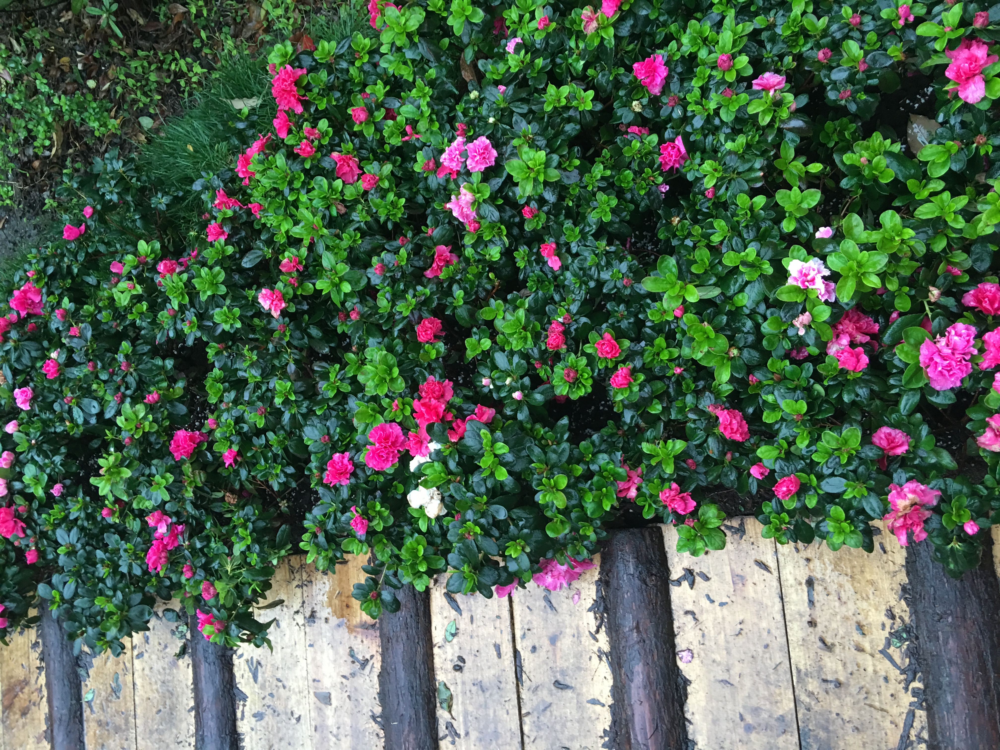

年底累到反射弧变成无限长, 不过好在春节没过, 现在也..也还称得上叫总结
很难用一句话总结2016, 有天灾, 有人祸, 还有自己作死的选择. 反正...很辛苦..
抬头看天,装作什么都没做过
脱离了一个吃力不讨好的项目, 我觉得besides技术,我的脾气倒是更上一层楼了. 声名在外的难合作我也不打算辩解了,估计还能少不少麻烦.
今年一年的项目在脑子里面留下的印象都变得模糊了, 无非就是救火,售前,挖坑,填坑的乱序循环.没什么心思回忆一遍.
倒是领着男人出去玩了一次,印象异常清晰
下雨天在苏州逛园子, 开的异常灿烂的花, 雨水洗刷过的好吃的乌梅, 有点腻歪的熏鱼和松鼠鱼
五一回了学校, 抱着一杯奶茶, 拉着某人,走在学校的树林里,聊聊天, 想想从前上学的日子, 治愈度100%
都说回忆是老了才会干的事情, 面对过去, 背对未来, 又能怎样....
前几天看❌姐的公众号,被很多句话戳中:
"对任何事都别太使劲, 一用力容易面目狰狞."
"继续培养或者巩固那些与人无关的爱好..别企图在这些爱好上找到意义,但是你总会发现,一年有一年过去, 还是这些丰俭由人,随喜自主的爱好,令我们始终活得有滋有味."
"心底干净,则生活明媚"十一又刷了一次日本, 有种每年都想去一次的计划. 已经不太想去大阪了. 着迷于静冈那种小城市的生活.
吃到了好吃的抹茶冰淇淋,たたや, 7个level, 结果最爱苦味最重的那种.
你看, 不管工作如何精彩或者不堪,当时的感受有多强烈, 最终记得的都是些温暖的小事, 爱吃的冰淇淋, 拉手看海的平静
我不是撒狗粮, 我只是太容易偷懒,喜欢安定
2017计划
......
......
......
......
......
......
......
要什么计划啊,都这么大了....
好吧, 大概列一个吧
- 领老妈出去玩
- 去两个没去过的国家
- 好好[认真脸]学日语和西语, 如果有可能,在男人去西语系国家的时候跟着...
- 克制下情绪吧..到底年纪不小了,老发脾气很伤身体..保养品都还挺贵的..
- 没什么正经计划对不对...
- 都这么久了, 最该✅的能力: 随机应变,以不变应万变
- 我觉得.不变得更糟糕就可以了